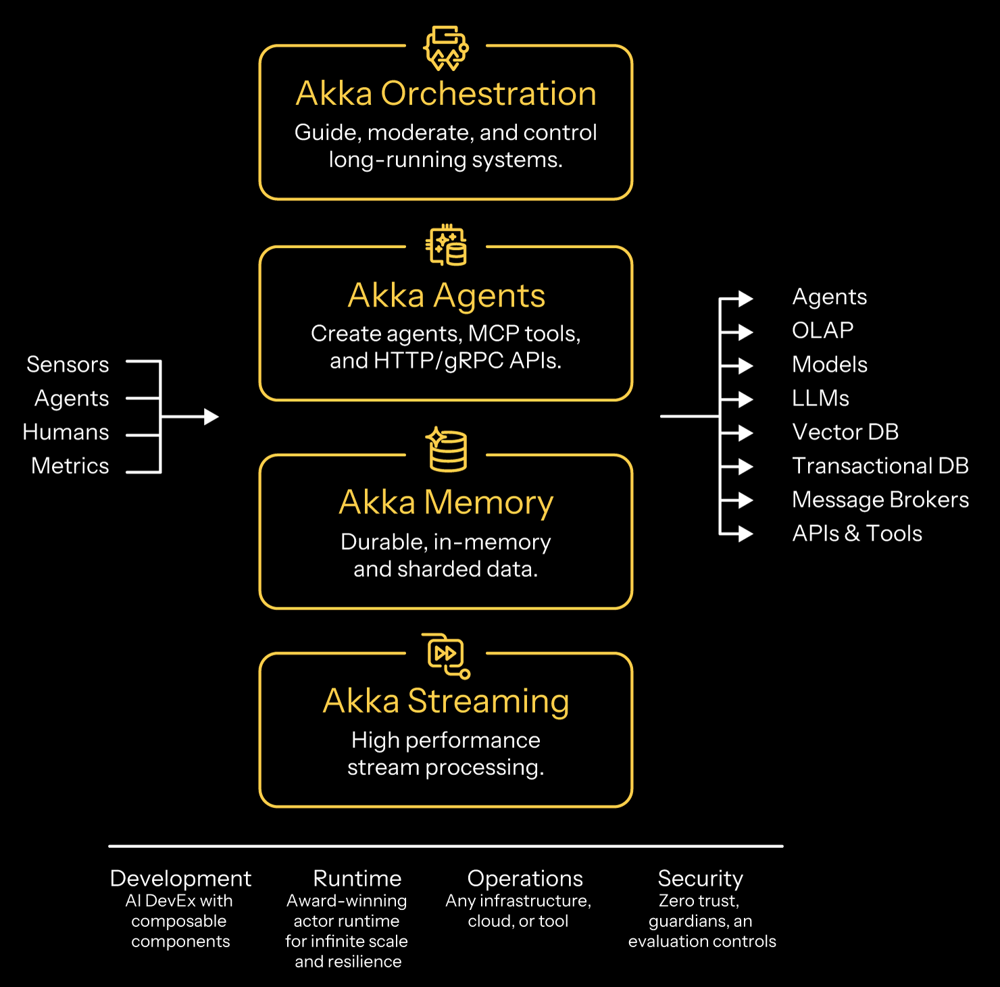
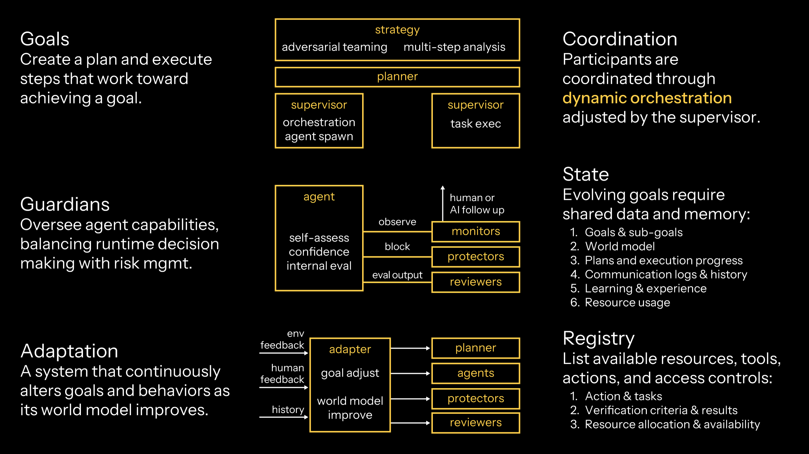
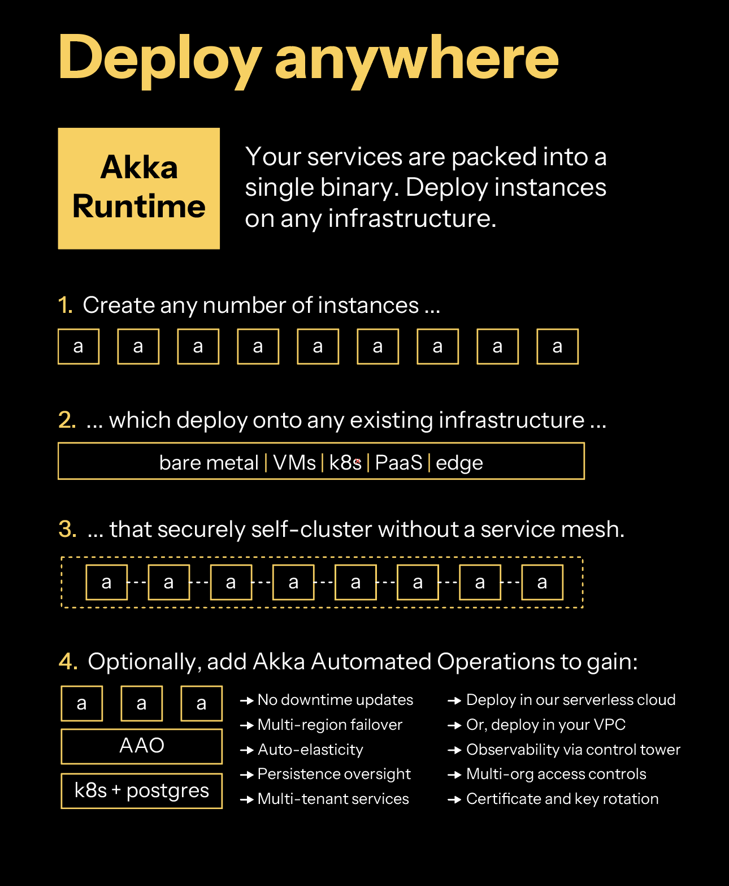

Concepts
Akka is a framework, runtime, and memory store for autonomous, adaptive agentic systems. Akka is delivered as an SDK and platform that can execute on any infrastructure, anywhere.

Developers create services built with Akka components that - when deployed - become agentic systems. Services can be tested locally or within a Continuous Integration/Continuous Delivery (CI/CD) practice using a Testkit that is available with each Akka component. Your services are compiled into a binary that includes the Akka Runtime which enables your services to self-cluster for scale and resilience. Akka clusters are able to execute on any infrastructure whether bare metal, Kubernetes, Docker or edge. Optionally, add Akka Automated Operations to gain multi-region failover, auto-elasticity, persistence oversight, multi-tenant services, and certificate rotation. Akka Automated Operations has two deployment options: our serverless cloud or your virtual private cloud (VPC).
| Product | Where To Start |
|---|---|
Akka Orchestration |
Akka provides a durable execution engine which automatically captures state at every step, and in the event of failure, can pick up exactly where they left off. No lost progress, no orphaned processes, and no manual recovery required. You implement orchestration by creating an Akka service with the Workflow component. |
Akka Agents |
Akka provides a development framework and runtime for agents. Agents can be stateful (durable memory included) or stateless. Agents can be invoked by other Akka components or run autonomously. Agents can transact with embedded tools, MCP servers, or any 3rd party data source with 100s of Akka connectors. You implement an agent by creating an Akka service with the Agent component. You implement a tool in a regular Java class or embedded within the Agent component. You implement an MCP server with the MCP Endpoint component. You implement APIs that can front an agent with the HTTP Endpoint and gRPC Endpoint components. |
Akka Memory |
Akka provides an in-memory, durable store for stateful data. Stateful data can be scoped to a single agent, or made available system-wide. Stateful data is persisted in an embedded event store that tracks incremental state changes, which enables recovery of system state (resilience) to its last known modification. State is automatically sharded and rebalanced across Akka nodes running in a cluster to support elastic scaling to terabytes of memory. State can also be replicated across regions for failover and disaster recovery. Short-term (traced and episodic) memory is included transparently within the Agent component. You implement long-term memory with the Event Sourced Entity and Key Value Entity components. You implement propagations of cross-system state with the View component. Views implement the Command Query Responsibility Segregation (CQRS) pattern. |
Akka Streaming |
Akka provides a continuous stream processing engine which can synthesize, aggregate, and analyze windows of data without receiving a terminating event. Data streams can be sourced from other Akka services or a 3rd party messaging broker or coming in through an Akka Endpoint. Your services can either store intermediate processing results into Akka Memory or trigger commands to other Akka components that take action on the data. You produce events to a message broker with the Producer annotation. You create a continuous incoming stream of events with the HTTP Endpoint or the gRPC Endpoint components. You create a stream processor to analyze and act against a stream of data with the Consumer component. |
Components
You build applications from Akka components. Each component provides structure and preserves responsiveness. All components except Endpoints live in your application package; Endpoints live in the api package.
Components are composable: you can build a service from a single component or many, and combine services to design agentic, transactional, analytics, edge, and digital twin systems. For the full catalog of components (Agents, Workflows, Endpoints, Entities, Views, Consumers, and Timers) and how to use each one, see Components.
Delegation with effects
In Akka, the behavior of your services is decoupled from the execution. This decoupling allows Akka to determine how a service is executed without being constrained by how your system’s behavior is defined. Delegation removes you from worrying about distributed systems, persistence, elasticity, or networking. With Akka’s hosted services, we use delegation to enable swapping out new, improved runtimes while your services are running without a recompilation or redeployment!
In Akka, you specify what the system should do, while the Akka runtime decides how it should be executed. For example, you define an agent by specifying the model it uses, its session memory, and the user prompt. This represents the what. The Akka runtime then determines the how by managing processes, virtual threads, persistence, and actor-based concurrency.
Your services define the what using Effects, which are Application Programming Interfaces (APIs) provided by each Akka component. When you write a component method, you return an Effect<…> object that describes, in a declarative way, what you want Akka to do.
For example, when using Akka’s Agent component, you might return an Effect that tells the runtime to execute the agent with a system message, a user message, and then send the AI model’s response back to the requester:
public Effect<String> query(String question) {
return effects()
.systemMessage("You are a helpful...")
.userMessage(question)
.thenReply();
}Anatomy of an agentic system
An agentic system is a distributed system that requires a variety of behaviors and infrastructure.

| Aspect | AI Role and Responsibility |
|---|---|
Agents |
Components that integrate with AI to perceive their environment, make decisions and take actions toward a specific goal You implement agents in Akka with the Agent component. |
Tools |
Functionality, local or remote, that agents may call upon to perform tasks beyond their core logic. You invoke tools in Akka through embedded agent function calls or by invoking a remote MCP tool. You can implement MCP servers with the MCP Endpoints component. |
Endpoints |
Externally accessible entry points through which agents are launched and controlled. You implement Endpoints in Akka using either HTTP, gRPC or MCP Endpoint components. |
Goals |
Clear objectives or outcomes that agents continuously work toward by making decisions and taking actions on their own. You implement goals in Akka by implementing a multi-agent system with a planner agent using a Workflow component to orchestrate the cross-agent interactions. |
Guardians |
Components that monitor, protect and evaluate the system against its goals and constraints. You evaluate agents in Akka with the agent evaluation capabilities. |
Adaptation |
Continuous, real-time streams from users or the environment which can alter the context, memory or semantic knowledge used by an agentic system. You implement adaptation in Akka by processing a stream of data from external sensors, either with the Consumer component or through streaming HTTP or gRPC interfaces. Consumers can modify an agent’s goals, memory, or guardians to affect the behavior of the system. |
Orchestration |
The ability to execute, persist and recover long-running tasks made possible through durable execution. You implement orchestration in Akka with the Workflow component. |
Memory |
Data that enables agents to reason over time, track context, make correct decisions and learn from experience. You inherit agentic and episodic (short-term) durable memory automatically when you implement a stateful Agent component. You can get long-term, multi-agent memory by implementing Event Sourced Entity or Key Value Entity components. |
Registry |
A built-in directory that stores information about all agents so they can be discovered and called upon in multi-agent systems. You use the registry provided by Akka by annotating each agent, which allows Akka to automatically register and use them as needed. |
Properties of a distributed system
A distributed system is any system that distributes logic or state. Distributed systems embody certain principles that when combined together create a system that achieves responsiveness. Distributed systems are capable of operating in any location: locally on your development machine, in the cloud, at the edge, embedded within a device, or a blend of all.
| Property | Definition |
|---|---|
Elasticity |
The system can automatically adjust its resources, scaling up or down to efficiently handle changes in workload. |
Resilience |
The system continues to function and recover quickly, even when parts of it fail, ensuring ongoing availability. |
Agility |
The system can easily adapt to new requirements or changes in its environment with minimal effort. |
Responsiveness |
Most importantly, the system consistently responds to users and events in a timely manner, maintaining a reliable experience. |
Agentic runtimes
Autonomous AI systems require three types of runtimes:
| Runtime | Description |
|---|---|
Durable Execution |
Long-lived, where the call-stack is persisted after every invocation to enable recovery and retries. This is utilized when you implement the Workflow component. |
Transactional |
Short-lived, high volume, concurrent execution. This is utilized when you implement Endpoint, View, Entity and Timer components. |
Streaming |
Continuous, never-ending processes that handle streams of data. This is utilized when you implement the Consumer component or SSE / gRPC streaming extension of an endpoint. |
Akka provides support for all three runtimes within the same SDK. The runtime behavior is automatic within your service based upon the components that you use during development. All of these runtimes leverage an actor-based core, which is a concurrency model with strong isolation and asynchronous message passing between actors. When running a service that executes multiple runtimes, Akka executes actors for different runtimes concurrently on the same nodes.
Component interoperability
Systems often rely on distributed components that need to work together. In Akka, components such as Agents, Workflows and Entities interact in ways that support flexibility, scale, and resilience. The aim is to help you build systems that are easy to reason about and maintain, even when deployed across different environments.
In Akka, component relationships are defined in code. At runtime, the platform handles the details. Messages are routed automatically, without requiring you to manage network paths or address resolution. This is known as location transparency. It means components can communicate without knowing where the other components are running.
Akka supports two primary ways for components to interact, either with each other or with the outside world.
| Client Type | Description |
|---|---|
One component can invoke another using a direct call. The Akka runtime handles this communication in a non-blocking way using lightweight virtual threads. Although a call may wait for a reply before continuing, the code remains simple and synchronous. There is no need to use futures, callbacks or other asynchronous programming techniques. A common example is a Workflow that invokes an Agent to perform a specific task, then waits for the Agent to finish. The syntax is simple and resembles a regular method call. |
|
Events |
Components can emit events to signal that something has occurred. Other components may subscribe to these events. This model resembles traditional publish-subscribe systems but does not require external brokers. For example, when an Entity updates its state, it will emit an event. A View can subscribe to that event to stay in sync. Events can also come from external sources, such as APIs or streaming services. |
Akka encourages building systems with loosely coupled components. Communication between them is handled in a way that avoids contention and keeps the system responsive, even under heavy load. Blocking operations are managed in a controlled and efficient way, allowing developers to focus on business logic without worrying about low-level concurrency concerns.
The examples below show common patterns for how components interact in an Akka system.
| Example Interoperability | Description |
|---|---|
Endpoint → Workflow → Agent |
An HTTP request starts a Workflow to process a file. The Workflow invokes an Agent that will later use the file’s content to answer questions. Another Endpoint records user interaction history into an Entity. A View reads from that Entity to reconstruct the conversation. |
Endpoint → Agent → Entity → View |
A user sends a query to an Endpoint. An Agent handles the query and stores the result in an Entity. A View builds the conversation history from that data. Separately, another Endpoint starts a Workflow, which also stores its results in an Entity. |
Stream → Consumer → Entity |
A stream of data is processed by a Consumer, which writes to an Entity for long-term use. At the same time, an Agent invokes logic through an Endpoint and stores the result in an Entity. |
Akka provides a way to connect components that is simple to use and reliable in production. By relying on message passing, virtual threads, and transparent routing, the platform helps you focus on what the system should do, rather than how its parts should reach each other.
Synchronous vs asynchronous component invocation
You decide how the component client invokes the component, and the Akka runtime handles the request in the background. The following table summarizes the key differences between synchronous and asynchronous component invocation.
| Synchronous | Asynchronous | |
|---|---|---|
When the component method returns |
After the method finishes |
Immediately |
Client behavior |
Waits for the result before continuing |
Continues immediately, must handle the result later |
Return type |
Whatever the component method returns directly |
A |
Component execution |
Always runs in the background |
Always runs in the background |
Common use case |
Calling a method and using the result in the next line of code |
Starting multiple async tasks or implementing background, always-on processes (Ambient AI) |
Ideal for |
Simple flows where the result is needed immediately |
Parallel task execution, deferred response handling, or long-running background logic |
For implementation guidance on invoking components, see Component and service calls.
Service packaging
The services you build with Akka components are composable, which can be combined to design agentic, transactional, analytics, edge, and digital twin systems. You can create services with one component or many.
Your services are packed into a single binary. You create instances of Akka that you can operate on any infrastructure: Platform as a Service (PaaS), Kubernetes, Docker Compose, virtual machines (VMs), bare metal, or edge.
Akka services self-cluster without you needing to install a service mesh. Akka clustering provides elasticity and resilience to your agentic services. In addition to data sharding, data rebalancing, and traffic routing, Akka clustering has built-in support for addressing split brain networking disruptions.
Optionally, you can deploy your agentic services into Akka Automated Operations, which provides a global control plane, multi-tenancy, multi-region operations (for compliance data pinning, failover, and disaster recovery), auto-elasticity based upon traffic load, and persistence management (memory auto-scaling).
